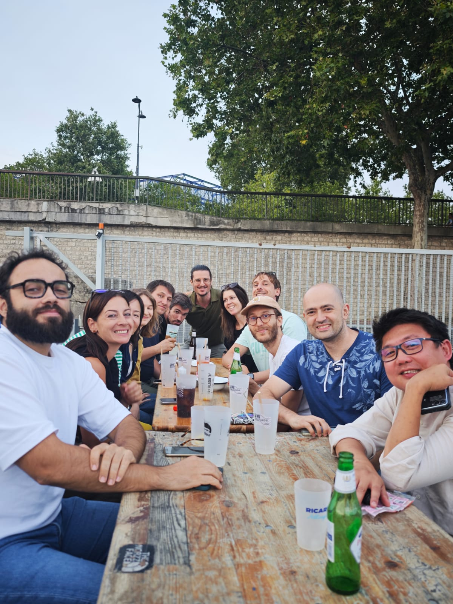
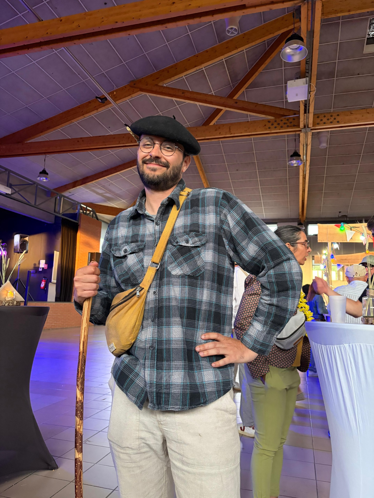

Se dépasser, progresser et partager le plaisir du jeu collectif.
Paris Tag Rugby Club
Le club.
Créé en 2013, le PTRC réunit débutants et joueurs confirmés autour d’un Tag Rugby mixte, convivial et ouvert à tous.
Notre histoire
Faire connaître et développer le Tag Rugby.
Le Paris Tag Rugby Club est né en 2013 à l’initiative de Julien Herbin. Depuis, l’équipe accueille des joueurs et joueuses de tous niveaux et contribue au développement du Tag Rugby en France.
Le club défend une pratique à la fois sportive et conviviale, avec l’ambition d’inscrire davantage la discipline dans le paysage du rugby national et international.
Nos valeurs
Ce qui nous rassemble.
Respecter partenaires, adversaires, arbitres et règles du jeu.
Le Tag Rugby reste avant tout un sport de loisir, accessible et convivial.
L’esprit d’équipe se construit sur le terrain et continue en dehors.
Les fondateurs du club
À l’origine du PTRC.
Deux personnes à l’origine du lancement du club en 2013.

Julien H.
Fondateur du Paris Tag Rugby Club.

Kristelle T.
Co-fondatrice du club.
Le bureau
L’équipe qui fait vivre l’association.
Composition publiée sur le site historique pour la saison 2023/2024.

Coline H.Présidente

Bérenger C.Trésorier

Pierre-Emmanuel E.Vice-président

Lison R.Affaires sportives

Pierre G.Relations institutionnelles

Yannick N.Expérience et tag francilien
La vie du club
Sur le terrain, et après.
Entraînements, tournois, déplacements et moments conviviaux : le club vit toute l’année.




Fédération
Affilié à la FFTR.
Le PTRC est affilié à la Fédération Française de Tag Rugby et participe au développement de la discipline en France.
Découvrir la FFTR ↗Rejoins-nous
Essayer gratuitement